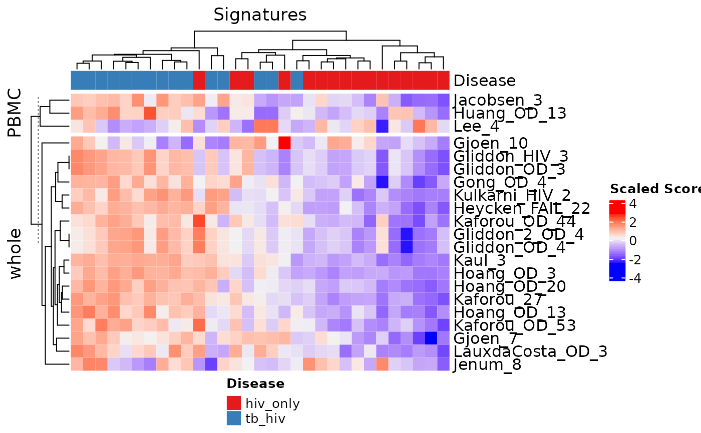

Adding Sig Objects to TBSP
Aubrey Odom-Mabey
4/15/2022
Source:vignettes/rmd/AddingSignatures_tmp.Rmd
AddingSignatures_tmp.RmdFirst things first
What is a sig object?
class(TBsignatures)## [1] "list"
TBsignatures[1:2]## $Anderson_42
## [1] "ACTA2" "ALKBH7" "APOL6" "LKAAEAR1" "YBEY" "THEM6"
## [7] "CARD16" "CLIP1" "CRIP2" "DEFA1" "DEFA1B" "DEFA3"
## [13] "DGCR6" "DNAJC30" "E4F1" "FBLN5" "GBP5" "GBP6"
## [19] "GNG3" "IMPDH2" "KLHL28" "LCMT1" "EIF2D" "LRRN3"
## [25] "MFGE8" "NDRG2" "NME3" "NOG" "PAQR7" "PASK"
## [31] "JADE1" "RAP1A" "SIVA1" "SNHG7" "TGIF1" "U2AF1L4"
## [37] "UBA52"
##
## $Anderson_OD_51
## [1] "ALAS2" "ALDH1A1" "C1QB" "LAMP5" "CAST" "SPICE1"
## [7] "CD226" "CD79A" "CDKN1C" "CEACAM1" "CYB561" "DEFA1"
## [13] "F2RL1" "MYOF" "FRMD3" "GBP3" "GBP5" "GBP6"
## [19] "GRAMD1B" "HLA-DRB1" "HLA-DRB5" "HLA-DRB6" "HPSE" "LINC00323"
## [25] "JUP" "KCNJ15" "KIFC3" "KLHDC8B" "KREMEN1" "NCF1B"
## [31] "OSBPL10" "PDCD1LG2" "SCGB3A1" "SEMA6B" "SIGLEC14" "SMARCD3"
## [37] "SNORD8" "TNFRSF17" "TPST1" "VAMP5" "ZBED2"Another object exists with “common” names found in the literature. We made up the names in the original object according to a certain set of rules to properly describe the signatures.
TBcommon[1:2]## $Anderson_42
## [1] "ACTA2" "ALKBH7" "APOL6" "LKAAEAR1" "YBEY" "THEM6"
## [7] "CARD16" "CLIP1" "CRIP2" "DEFA1" "DEFA1B" "DEFA3"
## [13] "DGCR6" "DNAJC30" "E4F1" "FBLN5" "GBP5" "GBP6"
## [19] "GNG3" "IMPDH2" "KLHL28" "LCMT1" "EIF2D" "LRRN3"
## [25] "MFGE8" "NDRG2" "NME3" "NOG" "PAQR7" "PASK"
## [31] "JADE1" "RAP1A" "SIVA1" "SNHG7" "TGIF1" "U2AF1L4"
## [37] "UBA52"
##
## $Anderson_OD_51
## [1] "ALAS2" "ALDH1A1" "C1QB" "LAMP5" "CAST" "SPICE1"
## [7] "CD226" "CD79A" "CDKN1C" "CEACAM1" "CYB561" "DEFA1"
## [13] "F2RL1" "MYOF" "FRMD3" "GBP3" "GBP5" "GBP6"
## [19] "GRAMD1B" "HLA-DRB1" "HLA-DRB5" "HLA-DRB6" "HPSE" "LINC00323"
## [25] "JUP" "KCNJ15" "KIFC3" "KLHDC8B" "KREMEN1" "NCF1B"
## [31] "OSBPL10" "PDCD1LG2" "SCGB3A1" "SEMA6B" "SIGLEC14" "SMARCD3"
## [37] "SNORD8" "TNFRSF17" "TPST1" "VAMP5" "ZBED2"## [,1] [,2]
## [1,] "Tabone_RES_25" "EarlyRESP-TB25"
## [2,] "Tabone_RES_27" "TREAT-TB27"
## [3,] "Thompson_9" "DISEASE"
## [4,] "Thompson_FAIL_13" "FAILURE"
## [5,] "Thompson_RES_5" "RESPONSE5"
## [6,] "Tornheim_71" "Tornheim_71"
## [7,] "Tornheim_RES_25" "Tornheim_RES_25"
## [8,] "Verhagen_10" "Verhagen_10"
## [9,] "Walter_51" "Walter_51"
## [10,] "Walter_PNA_119" "Walter_PNA_119"
## [11,] "Walter_PNA_47" "Walter_PNA_47"Splitting signatures by up/down gene regulation – this was only for a few signatures, to help out in the original modeling efforts.
TBsignaturesSplit[1:2]## $Anderson_42
## $Anderson_42$Anderson_42_up
## [1] "ACTA2" "APOL6" "CARD16" "CLIP1" "DEFA1" "DEFA1B"
## [7] "DEFA3" "GBP5" "GBP6" "RAP1A" "LOC400759"
##
## $Anderson_42$Anderson_42_dn
## [1] "ALKBH7" "IFT46" "LKAAEAR1" "YBEY" "THEM6" "CRIP2"
## [7] "DGCR6" "DNAJC30" "E4F1" "FBLN5" "GNG3" "HS.538100"
## [13] "IMPDH2" "KLHL28" "LCMT1" "LGTN" "LOC389816" "LRRN3"
## [19] "MFGE8" "NDRG2" "NME3" "NOG" "PAQR7" "PASK"
## [25] "JADE1" "SIVA1" "SNHG7" "TGIF1" "U2AF1L4" "UBA52"
##
##
## $Anderson_OD_51
## $Anderson_OD_51$Anderson_OD_51_up
## [1] "ALAS2" "ALDH1A1" "C1QB" "CAST" "SPICE1" "CD226"
## [7] "CD79A" "CYB561" "DEFA1" "F2RL1" "MYOF" "GBP3"
## [13] "GBP5" "GBP6" "HLA-DRB1" "HLA-DRB5" "HLA-DRB6" "HS.106234"
## [19] "HS.171481" "KIFC3" "KLHDC8B" "LOC389386" "LOC642678" "NCF1B"
## [25] "OSBPL10" "PDCD1LG2" "SIGLEC14" "SMARCD3" "SNORD8" "TNFRSF17"
## [31] "TPST1"
##
## $Anderson_OD_51$Anderson_OD_51_dn
## [1] "LAMP5" "C3HC4" "CDKN1C" "CEACAM1" "FRMD3" "GRAMD1B"
## [7] "HPSE" "JUP" "KCNJ15" "KREMEN1" "LOC647460" "LOC649210"
## [13] "LOC653778" "MIR1974" "SCGB3A1" "SEMA6B" "VAMP5" "ZBED2"How do we make signature objects?
It’s easy! Just make a named list of genes.
Sweeney_OD_3 <- c("KLF2", "GBP5", "DUSP3")
Blankley_5 <- c("AIM2", "BATF2", "FCGR1B", "HP", "TLR5")
example_TB <- list("Sweeney_OD_3" = Sweeney_OD_3,
"Blankley_5" = Blankley_5)
str(example_TB)## List of 2
## $ Sweeney_OD_3: chr [1:3] "KLF2" "GBP5" "DUSP3"
## $ Blankley_5 : chr [1:5] "AIM2" "BATF2" "FCGR1B" "HP" ...What if you have A LOT of genes?
# Make a temporary CSV
TBsignatures$Blankley_380 %>%
TBSignatureProfiler::update_genenames() %>%
tibble(Blankley_380 = .) %>%
write_csv(file = "~/temp_380_genes.csv")
# Read the CSV
Blankley_380 <- read_csv("~/temp_380_genes.csv")## Rows: 383 Columns: 1
## ── Column specification ────────────────────────────────────────────────────────
## Delimiter: ","
## chr (1): Blankley_380
##
## ℹ Use `spec()` to retrieve the full column specification for this data.
## ℹ Specify the column types or set `show_col_types = FALSE` to quiet this message.
Blankley_380[1:5, ]## # A tibble: 5 × 1
## Blankley_380
## <chr>
## 1 AIM2
## 2 BATF2
## 3 FCGR1B
## 4 HP
## 5 TLR5
# Add to list
new_example_TB <- example_TB
new_example_TB$Blankley_380 <- Blankley_380$Blankley_380
str(new_example_TB)## List of 3
## $ Sweeney_OD_3: chr [1:3] "KLF2" "GBP5" "DUSP3"
## $ Blankley_5 : chr [1:5] "AIM2" "BATF2" "FCGR1B" "HP" ...
## $ Blankley_380: chr [1:383] "AIM2" "BATF2" "FCGR1B" "HP" ...Theoretically, could do for other genes as well and automate this process!
add_genes <- function(input_list, new_sig_name, sig_path) {
new_sig_genes <- read_csv(sig_path, show_col_types = FALSE)
input_list[new_sig_name] <- new_sig_genes[, 1]
return(input_list)
}
str(example_TB)## List of 2
## $ Sweeney_OD_3: chr [1:3] "KLF2" "GBP5" "DUSP3"
## $ Blankley_5 : chr [1:5] "AIM2" "BATF2" "FCGR1B" "HP" ...
automated_ex_tb <- add_genes(example_TB, "Blankley_380", "~/temp_380_genes.csv")
str(automated_ex_tb)## List of 3
## $ Sweeney_OD_3: chr [1:3] "KLF2" "GBP5" "DUSP3"
## $ Blankley_5 : chr [1:5] "AIM2" "BATF2" "FCGR1B" "HP" ...
## $ Blankley_380: chr [1:383] "AIM2" "BATF2" "FCGR1B" "HP" ...Adding heatmap information (distinguishing signature groups)
# make sure this is in the same order as the signatures object
# Best to alphebetize using sort() (and change rows using order())
head(sigAnnotData)## names disease tissue_type
## 1 Anderson_42 Disease whole
## 2 Anderson_OD_51 OD whole
## 3 Berry_393 Disease whole
## 4 Berry_OD_86 OD whole
## 5 Blankley_380 Disease mixed
## 6 Blankley_5 Disease mixed
data("TB_hiv")
sigs_to_run <- TBsignatures[20:40]
out <- capture.output(res <- runTBsigProfiler(TB_hiv, useAssay = "counts",
signatures = sigs_to_run,
algorithm = c("ssGSEA"), parallel.sz = 1,
combineSigAndAlgorithm = TRUE))## Parameter update_genes is TRUE. Gene names will be updated.## Running ssGSEA## Warning in .filterFeatures(expr, method): 2204 genes with constant expression
## values throuhgout the samples.
signatureHeatmap(res, signatureColNames = names(sigs_to_run),
annotationColNames = "Disease", scale = TRUE,
showColumnNames = FALSE, split_heatmap = "tissue_type")
THE BEST PART: Documentation
Data documentation is currently saved in data.R – I recommend making a new R script for your object(s). No need to confine it all in one place (it make it harder to find).
Example: ?TBsignatures
Making an entry for a signature
mkTBreference <- function(TBsigname, ref, DOInum) {
cat("\\item{\\strong{", TBsigname, "}}{: ", ref,
" \\href{http://dx.doi.org/", DOInum, "}{", DOInum, "}}", sep = "")
}
mkTBreference(TBsigname = "LauxdaCosta2_OD_3", # The name output in a message from addTBsignature()
ref = "Laux da Costa L, Delcroix M, Dalla Costa ER, et al. A real-time PCR signature to discriminate between tuberculosis and other pulmonary diseases. Tuberculosis (Edinb). 2015;95(4):421-425.",
DOInum = "10.1016/j.tube.2015.04.008")
## \item{\strong{LauxdaCosta2_OD_3}}{: Laux da Costa L, Delcroix M, Dalla Costa ER, et al. A real-time PCR signature to discriminate between tuberculosis and other pulmonary diseases. Tuberculosis (Edinb). 2015;95(4):421-425. \href{http://dx.doi.org/10.1016/j.tube.2015.04.008}{10.1016/j.tube.2015.04.008}}## \item{\strong{LauxdaCosta2_OD_3}}{: Laux da Costa L, Delcroix M, Dalla Costa ER, et al. A real-time PCR signature to discriminate between tuberculosis and other pulmonary diseases. Tuberculosis (Edinb). 2015;95(4):421-425. \href{http://dx.doi.org/10.1016/j.tube.2015.04.008}{10.1016/j.tube.2015.04.008}}